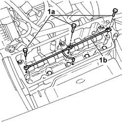
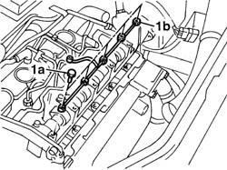
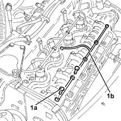
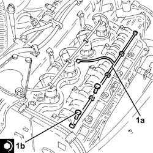

1084B50 timing mount oil pipe - r r
- Path
- Procedures > 10 ENGINE > 1084 ENGINE LUBRICATION > 1084B ENGINE OIL LUBRICATION CIRCUIT > 1084B50 timing mount oil pipe - r r
- Kind
- repair procedure (removal / refitting; the operation number is the code)
- Applies to
- all engines; all production periods
- Interactive page
- https://sloeber94.github.io/elrnDB-fDbl/en/#/2584292
Applies to: all engines; all production periods
 Removing
Removing
 Refitting
Refitting1048A10 air cleaner filtering element - replace
1016A20 single cam cover - r + r and replace gasket
1. Undo bolts (1a) and remove oil supply pipe to the camshaft mounts (1b).

Applies to: all engines; all production periods
Removing
Refitting1016A22 cam cover with fuel duct - r + r and replace gasket
1. Undo bolts (1a) and remove oil supply pipe (1b) to the camshaft mounts.

Applies to: all engines; all production periods
Removing
RefittingProceed with the removal 1016A26 cam cover with built in oil vapour separator r r .
1. Undo the bolts (1a) and remove the oil supply pipe to the camshaft supports (1b).

Applies to: all engines; all production periods
Refitting
RemovingFit the pipe and bolt in place.
Tighten the camshaft cap fixing bolts to torque.
 | Fastening | Component | Ø | Value (daNm) |
|---|---|---|---|---|
3 | Bolt | CAMSHAFT CAPS | M6 | 1 |
| Fastening | Component | Ø | Value (daNm) |
|---|---|---|---|---|
3 | Bolt | CAMSHAFT CAPS | M8 x 1.25 | 2 |
1016A20 single cam cover - r + r and replace gasket
Applies to: all engines; all production periods
Refitting
RemovingFit the oil delivery pipe and tighten the camshaft cap bolts to the specified torque.
| Fastening | Component | Ø | Value (daNm) |
|---|---|---|---|---|
- | Bolt | CAMSHAFT CAPS | M6 | 1 |
| Fastening | Component | Ø | Value (daNm) |
|---|---|---|---|---|
- | Bolt | CAMSHAFT CAPS | M7 | 1.5 |
Applies to: all engines; all production periods
Refitting
Removing1. Fit the oil supply pipe to the camshaft supports (1a) and fix them tightening the bolts (1b) to the recommended torque.
| Fastening | Component | Ø | Value (daNm) |
|---|---|---|---|---|
1b | Bolt | CAMSHAFT CAPS | M7 | (Cylinder head side) 1.4 ÷ 1.7 |

Applies to: all engines; all production periods
Proceed with the refitting 1016A26 cam cover with built in oil vapour separator r r .